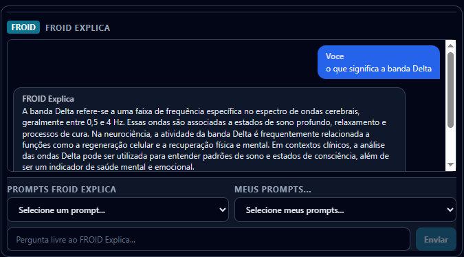

Connaissance
La génération augmentée par la recherche (RAG) sélectionne des extraits pertinents pour étayer la réponse sur le produit et ses concepts.
FROID Explica
FROID Psique / Assistant
FROID Explica aide le professionnel à explorer la signification opérationnelle des mesures disponibles et à consulter des connaissances. Le contexte envoyé depuis l'écran oriente la réponse ; la décision clinique reste à celui qui reçoit le patient.

La génération augmentée par la recherche (RAG) sélectionne des extraits pertinents pour étayer la réponse sur le produit et ses concepts.
Le tableau des mesures à l'écran, la ligne de base et tous les découpages de la séance, chacun avec l'écart par rapport à la ligne de base calculé par le serveur, plus la transcription avec l'instant de chaque ligne. Dans le rapport, l'assistant répond par un tableau par découpage. Quand la question compare, il consulte les séances du patient, les patients de la personne qui demande et l'agrégat de la clinique, toujours sous le même accès que la personne a déjà dans le panneau. Pour situer une valeur, il consulte la référence populationnelle du Data-FROID : la distribution d'une mesure dans le corpus anonyme de séances, avec un plancher de cohorte et aucun chiffre en dessous, calculée par le serveur. Une question n'élargit pas les permissions.
La consultation de Data-Froid dépend de la base éligible et des conditions de confidentialité. Elle ne donne pas accès aux dossiers d'autres personnes.
La recherche localise le matériel lié à la question ; le modèle rédige une réponse avec ce contexte. Comme dans une recherche bibliographique, trouver un extrait ne garantit pas que la conclusion soit correcte.
Vérifiez la source et les registres d'origine. Le RAG n'élimine pas les erreurs, et la taille d'un modèle n'est pas une mesure de précision clinique. Les données absentes doivent continuer à être déclarées comme absentes.
La bibliothèque native offre des points de départ. Les questions personnalisées permettent d'expliciter l'objectif, la séance et l'intervalle. Le nombre et la disponibilité des prompts suivent la version de l'application.
Dans les prompts personnalisés, privilégiez un objectif et un contexte clairs. N'incluez pas de données identifiables de tiers en dehors du contexte autorisé. Confirmez dans l'application où les questions sont enregistrées et s'il existe une synchronisation entre appareils.
L'assistant ne doit pas conclure à l'authenticité, à un conflit facial-vocal, à un diagnostic ou à la supériorité d'une thérapie à partir des indices. L'interprétation faciale reste séparée de la vocale.